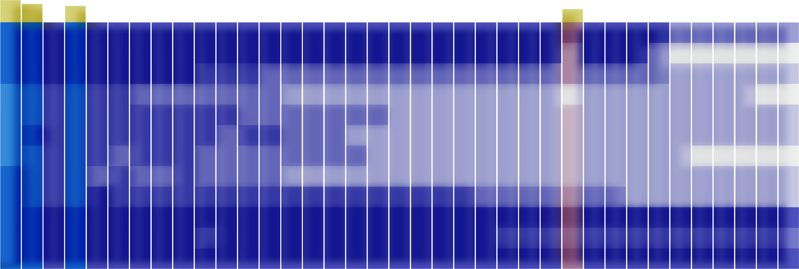

Data, strategy & evidence generation in ALS therapy
The APST ALS Data Repository comprises a comprehensive, fastest-growing real-world ALS dataset that combines ALSFRS-R, neurofilament light chain (sNfL), and detailed motor phenotypes. This integrated dataset supports robust disease progression modelling, biomarker validation, and advanced analytics, with secure access to anonymised source data for digital twin populations, machine learning, and trial design and optimisation, creating a clear strategic advantage for academic and industry ALS programmes.
ALS Functional Rating Scale (ALSFRS-R)
The ALS Functional Rating Scale-Revised (ALSFRS-R), is widely used to characterize the disease trajectory in clinical research and drug trials. The ALSFRS-R is the main instrument to assess symptoms and motor functions in ALS trials. It comprises 12 items with 5 rating options (0 to 4).

Vertical heat map of a single patient's longitudinal data in the data repository. Each small coloured tile represents a data category arranged in a vertical stacked strip: ALSFRS (dark blue), NfL (green) and phenotype data (violet).
The rate of ALS progression, quantified by the monthly change in the ALSFRS-R, is widely used to characterize the disease trajectory in ALS. It has been shown to correlate with survival and the biomarker neurofilament light chain (NfL). A reduction in the slowing of the functional decline is recognized by regulatory authorities as effectiveness endpoint in ALS drug development programs. Consequently, most clinical trial protocols have incorporated ALS progression, measured as the change of ALSFRS-R from baseline, as a primary or secondary outcome measure.
ALS Functional Rating Scale as primary treatment response marker in ALS.
ALS progression (ALS-PR) as measured by the monthy change of the ALSFRS-R (“slope”) before (“running in”) and during treatment (“observation”) serve as primary outcome parameter. In this example, patient #1 and #2 show different ALS-PR at baseline, and reductions of ALS-PR during treatment with an investigational drug.
The self-explanatory version of the ALSFRS-R (ALSFRS-R-SE) includes instructions and explanations for each item, facilitating the assessment for patients. The ALSFRS-R-SE is used for remote digital assessment via the ALS App. It may increase the efficiency of clinical studies if the rating of ALSFRS-R is moved to digital data capture, which requires less effort from patients with impaired speech and mobility and less resources of health care professionals.
Clinic and remote digital assessment of the ALSFRS-R.
Overview of ALSFRS-R assessments during clinic visits and via the ALS App as analyzed in 3 groups of ALS progression rate (ALSPR), respectively: slower progressing ALS (<0.5 ALSFRS-R/month), intermediate progressing ALS (≥0.5 and ≤1.0 ALSFRS-R/month) and faster progressing ALS (> 1.0 ALSFRS-R/month). Every dot represents one assessment. The mean progression is shown in the blue graph and the shadow represents its variation. Figure, courtesy of the authors of reference (3).
Value proposition of ALSFRS-R
Inclusion or exclusion criteria
Functional impairment of participants is categorized using the total ALSFRS-R score. and used as inclusion or exclusion criteria of most clinical trials. Patients with moderate impairment are typically enrolled in clinical studies.
Trial enrichment and stratification
Based on the slope of ALSFRS-R, prognostic groups of slower, intermediate, and faster ALS progression have been defined and used as stratification criteria in ALS trials.
Treatment response
A reduction in the slowing of the functional decline is recognized by regulatory authorities as effectiveness endpoint in ALS drug development programs. Consequently, most clinical trial protocols have incorporated the ALS progression, measured as the change of ALSFRS-R from baseline, as a primary or secondary outcome measure.
The ALSFRS-R is the principal functional endpoint in most ALS drug development programs. Pre-defined total score ranges and baseline ALSFRS-R slopes are commonly applied to reduce heterogeneity of study cohorts. A clear understanding of the methodology, performance characteristics, and limitations of the ALSFRS-R is therefore essential for trial design and for interpreting study outcomes. The growing use of the self-explanatory ALSFRS-R and the increasing availability of remotely collected data support more efficient data capture and may facilitate the digital transformation of ALS trials. As clinical studies increasingly integrate motor phenotypes, biomarkers, and functional trajectories into enrichment strategies, the ALSFRS-R provides the longitudinal anchor that links these variables and contextualizes treatment effects within the overall disease course.
ALS Motor Phenotypes – The ALS OPM Classification
In ALS, heterogeneity of motor phenotypes is a fundamental hallmark of the disease and is determined by variability of three anatomical determinants: the region of onset; the spatial and temporal propagation of motor dysfunction from the site of onset to other body regions; and the relative involvement of upper (UMN) and lower (LMN) motor neuron degeneration. Distinct ALS phenotypes were associated with different progression and survival. Given its predictive capacity, clinical phenotyping is of relevance in clinical practice, and research and drug development.
Phenotypes of onset differentiate the site of first symptoms including the head, arm, trunk or leg region. First symptoms are defined as impaired motor function including weakness or/and slowed, poorly coordinated voluntary movement, dysarthria, dysphagia, and hypoventilation. The assessment is based on the patient history.
ALS OPM classification – «O-axis»
ALS phenotype classification according to the onset at the head (O1), the arm (distal or proximal, O2d/p), the trunk (respiratory or axial onset, O3r, O3a) or the leg (distal or proximal, O4d/p).
Phenotypes of propagation differentiate the temporal and spatial pattern in which motor neuron dysfunction spreads from the region of onset to another body region. The assessment is based on the patient history and/or neurological physical examinations in a follow-up of at least 12 months.
ALS OPM classification – «P-axis»
ALS phenotype classification according to the propagation of motor symptoms from the region of onset to another, vertically distant body region. P0, no propagation has occurred; P1, propagation has occurred. The status is specified by the number of months (n) from symptom onset to the occurrence of propagation.
A neurological examination is performed to assess the symptoms and signs of UMN and/or LMN dysfunction. The evaluation is limited to a physical examination and excludes electrophysiologic, laboratory, and imaging studies. The assessment is based on a neurological examination follow-up.
ALS OPM classification – «M-axis»
ALS phenotype classification according to the degree of upper and/or lower motor neuron dysfunction (UMN/LMN). M0, balanced UMN and LMN; M1p, pure UMN dysfunction; M1d, dominant UMN dysfunction; M2p, pure LMN dysfunction; M2d, dominant LMN dysfunction; M3 dissociated upper and lower motor neuron dysfunction M3. Light blue, UMN dysfunction; dark blue, LMN dysfunction.
The ALS OPM classification also maps legacy terms (such as flail arm or flail leg syndrome, progressive muscle atrophy) into a unified framework, allowing for re-classification of historical data without losing continuity. Ultimately, ALS OPM provides a shared language for ALS motor phenotypes, enhancing understanding among clinicians, researchers, statisticians, and regulatory bodies while enabling consistent patient representation and tracking of changes over time across various research settings.
Value proposition of ALS phenotypes
Eligibility and enrichment
Different ALS phenotypes demonstrate varying rates of progression and survival. ALS OPM enables the exclusion of phenotypes that could dilute treatment effects or distort progression curves, while allowing for the enrichment of the target phenotypes.
Integration with biomarkers and digital outcomes
The ALS OPM framework, developed from a comprehensive multicenter ALS program, demonstrates clear links between phenotyping and serum neurofilament light chain (NfL) levels, ALS progression, and survival outcomes. By utilizing the refined ALS OPM phenotypes, sponsors can effectively model the relationship between specific phenotypes and baseline NfL levels, as well as longitudinal NfL dynamics and ALSFRS-R trajectories. This approach allows for improved sample size determination, and endpoint selection.
Phenotypic drug targeting
ALS OPM phenotypes allow for an anatomically guided match of the trial population with target structures of the investigational drug. Thus, drugs with targets at the neuromuscular junction, or muscle need to be applied to lower motor neuron (LMN)-dominant phenotypes (M2p > M2d > M0 phenotypes).
By integrating the ALS OPM classification into drug development programs, sponsors can standardize phenotype descriptions across investigators and trial sites, reduce heterogeneity in trial cohorts and link anatomical phenotypes with biomarkers (such as serum NfL or troponin T). Phenotype definitions are increasingly important for interpreting complex or heterogeneous results. In short, ALS OPM transforms clinical phenotypes into a structured, analyzable variable, and may unlock more value from ALS trial datasets.
Neurofilament light chain (NfL)
In ALS, clinical symptoms and individual prognosis are highly variable. Neurofilament light chain (NfL) is structural protein of myelinated axons which has emerged as a prognostic biomarker in patient management and clinical research. Specifically, NfL concentrations in CSF and serum are robust indicators of axonal damage in ALS. NfL levels significantly correlate with disease progression as measured by the ALS functional rating scale (ALSFRS-R), and, most importantly, with survival. Furthermore, NfL has been introduced as an endpoint in clinical trials as an early indicator of treatment response.
Higher NfL levels are strongly associated with faster disease progression, steeper decline on the ALSFRS-R, and reduced survival. At the same time, long-term survivors often show only moderately elevated levels, making sNfL a powerful marker for distinguishing fast from slow progressors, improving prognostic assessment beyond baseline ALSFRS-R, and helping to explain variability in survival and treatment response.
Neurofilament light chain (NfL) in correlation to ALS progression (ALS-PR)
Serum concentration of NfL is more elevated in patients with faster progressing ALS compared to slower ALS progression. Slow (<0,5 ALSFRS-R/month), intermediate (0,5-1,0) and fast (> 1,0). ALS-PR, ALS progression defined as monthly change of the ALS functional rating scale (ALSFRS-R). Figure, courtesy of the authors of reference (2).
The use of NfL as a stratification criterion in clinical trials or response marker for disease modifying drugs is of major interest. The robust association between ALS progression and sNfL supports the concept that NfL is an additional criterion for inclusion or stratification in clinical trials. Thus, sNfL, in addition to the pre-study slope of ALSFRS-R, could help to better define study groups at baseline. The results of this study reinforce the use of sNfL as an important endpoint in clinical trials, at least for drugs that aim to reduce neuroaxonal degeneration and go beyond symptomatic therapy.
Neurofilament light chain (NfL) as treatment response marker in ALS.
Serum concentration of NfL before (“running in”) and during treatment (“observation”) serve as treatment response marker. In this example, patient #1 and #2 show different levels of NfL elevation at baseline, and NfL reductions during treatment with an investigational drug.
Value proposition of NfL
Trial enrichment and stratification
Baseline NfL can be used to define prognostic strata, for example, distinguishing faster from slower ALS progression, which reduces noise from clinical heterogeneity.
Treatment response
As a pharmacodynamic endpoint, treatment-induced reductions or stabilisation of NfL can serve as early signals of slowed neurodegeneration, emerging well before survival curves or ALSFRS-R trajectories begin to diverge.
Mechanistic insights
Because sNfL can reflect the extent of neuronal injury, this biomarker can help to prioritise compounds or combinations that produce the strongest and most consistent NfL signal in ALS.
By integrating NfL into drug development programs, sponsors can reduce heterogeneity in trial cohorts. NfL can be embedded within a structured framework that combines NfL levels with ALSFRS-R slopes and ALS motor phenotypes. This biomarker can be used to enrich study populations or to stratify participants in clinical trials. In short, NfL can increase trial efficiency and has the potential to demonstrate early and robust signals of treatment response in ALS.